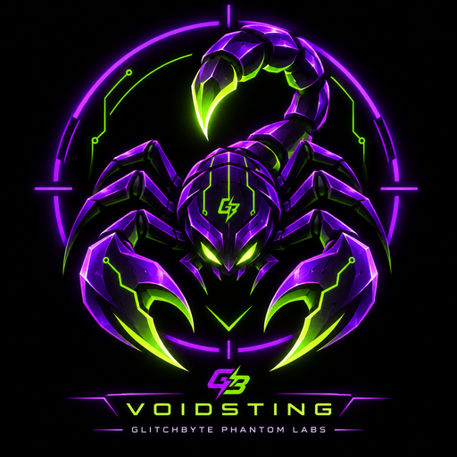
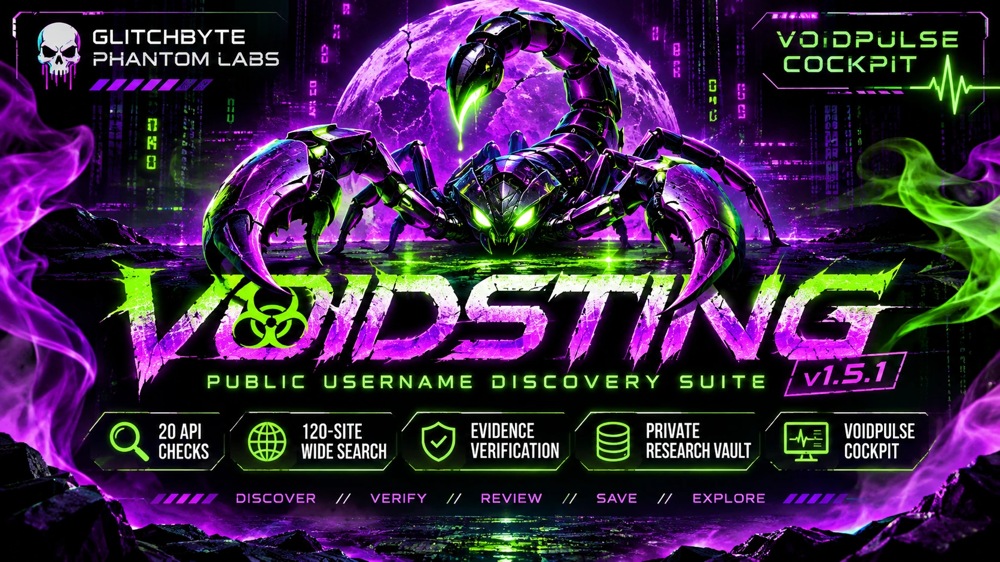
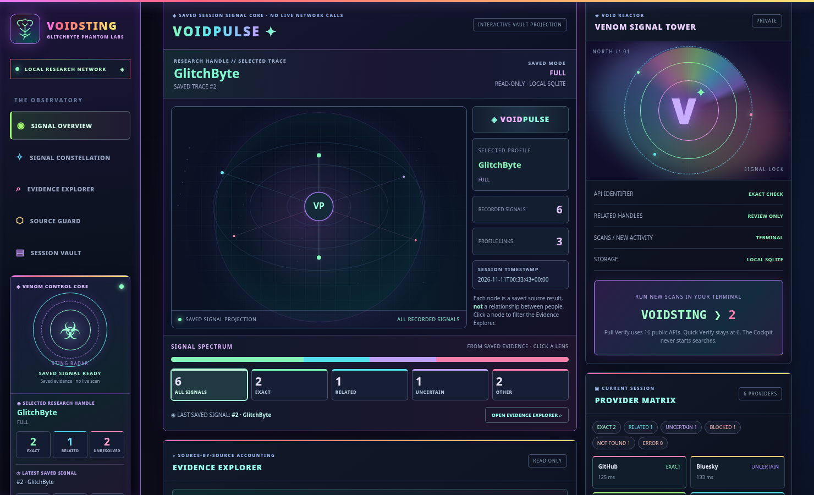

Exact public API checks
Quick mode checks six APIs; Full Verify checks twenty API endpoints.

VOIDSTINGGLITCHBYTE PHANTOM LABSIndependent public-username research with exact-API checks, optional wider site discovery, and a private evidence vault. Every result keeps its own confidence label. Account matches do not prove shared identity.

Verify public usernames. Respect the evidence. An independent research instrument, with its own workflow, source rules and local data.
Quick mode checks six APIs; Full Verify checks twenty API endpoints.
Menu [3] combines API and directory checks with a bounded 120-site public sweep when installed.
EXACT, RELATED, NOT_FOUND, UNCERTAIN, BLOCKED and ERROR stay distinct.
Read-only saved-session constellation and Evidence Explorer, with balanced rainbow layout.
Separate SQLite research history; no data shared with BLACKSWARM.
The Cockpit runs locally only when you request it; wide discoveries need independent review.
The Cockpit is part of the actual local application. This public website doesn't run research queries, collect data, or access your personal research sessions.

The approved balanced VOIDPULSE view displays saved public evidence, source-status categories, session history and filters. Visual nodes illustrate a saved research session, not relationships between people.
Download or clone the actual source repository, run from the extracted folder, and choose the Cockpit from its own menu. No private research files belong in the public GitHub repository.
# After extracting the app to a folder bash SETUP-WIDE-SEARCH.sh # optional, separate venv bash RUN-VOIDSTING.sh --color always # [3] PUBLIC DIRECTORY + WIDE · [10] OPTIONAL COCKPIT
No accounts, live private sessions, personal vault contents, credentials or user-exported reports are included with this public site. Research activity belongs to the locally installed tool.
Its independent sister discovers public-web links from free search indexes, with a 20-command terminal deck and Swarm Cockpit. They do not share a vault or modify each other's installed files.
The sister-home link becomes active when both GitHub Pages sites have been published.